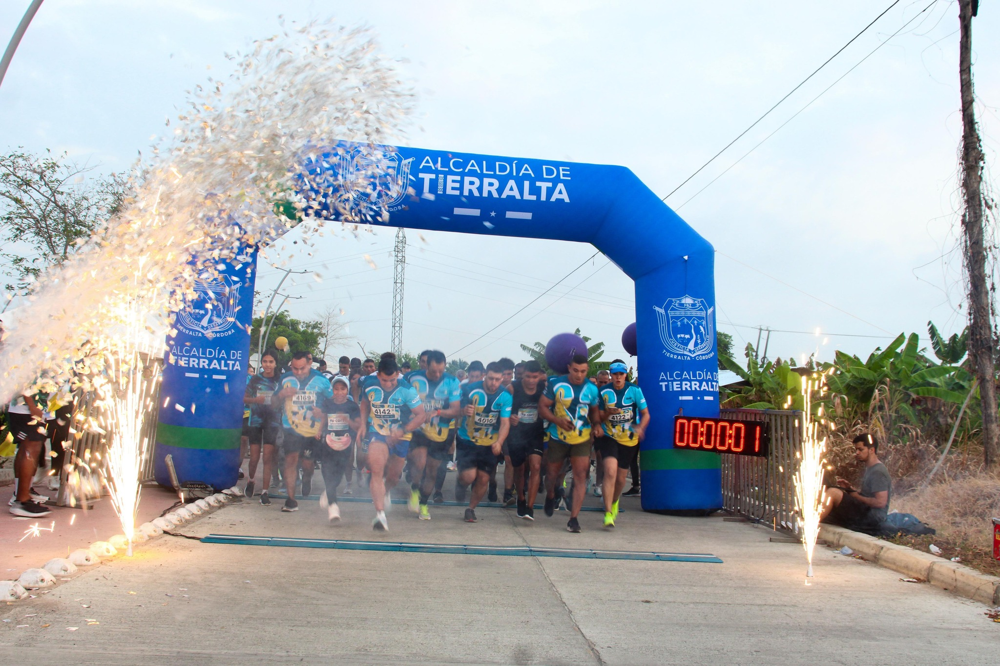
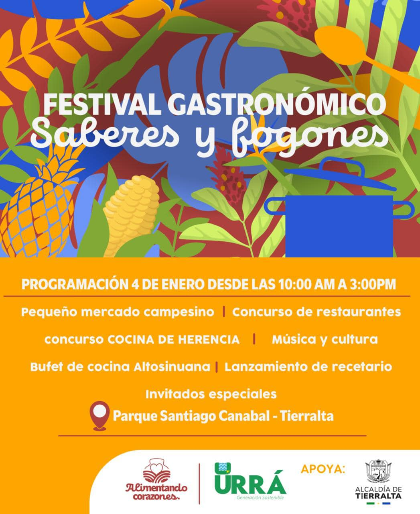
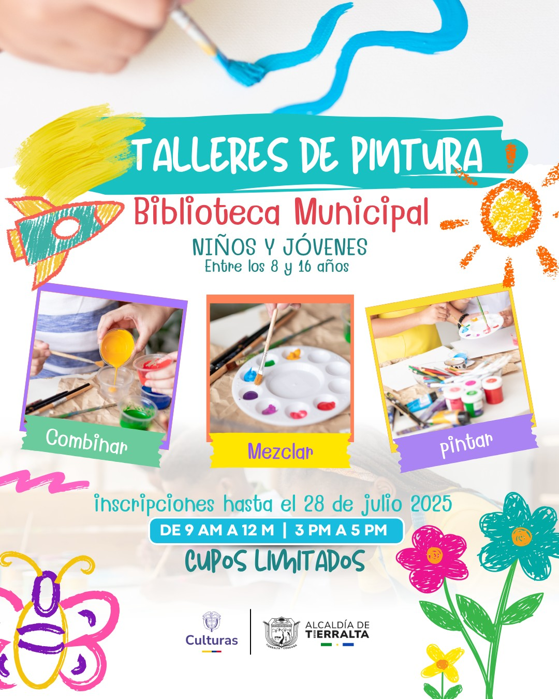
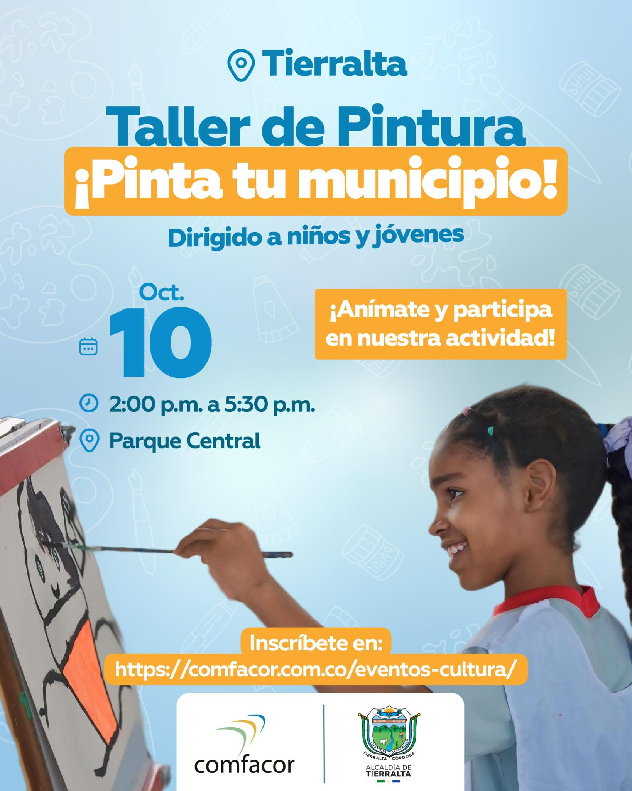

Community Events
Community events in Tierralta are fundamental for strengthening community life and citizen participation.
They are generally free or low-cost, allowing access for the entire community, as they include concerts, workshops, sports, recreational, and cultural activities that promote integration and social well-being.

Golden Half Marathon
This sporting and charitable event aimed to support an important social cause: the construction of the Macondo Children’s Home, a shelter for children with cancer and their caregivers.

Gastronomic Festival: Knowledge and Stives
This festival highlights the culinary richness of the Alto Sinú region through traditional cooking competitions and the participation of local restaurants.

Workshops at the Municipal Library
The municipal library organizes workshops for children and young people between the ages of 8 and 16, promoting learning and creativity.

Comfacor Activities
The Córdoba Family Compensation Fund (Comfacor) also promotes activities for children and young people in the municipality.